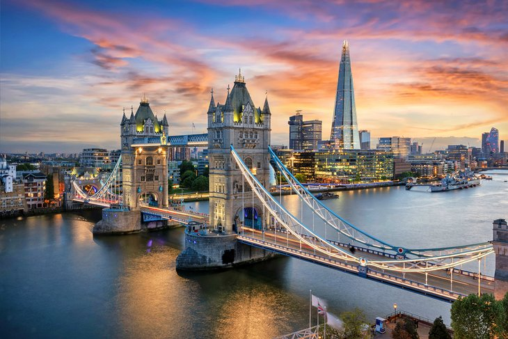

England is a country that is part of the United Kingdom.[4] It shares land borders with Wales to its west and Scotland to its north. The Irish Sea lies northwest and the Celtic Sea to the southwest. It is separated from continental Europe by the North Sea to the east and the English Channel to the south. The country covers five-eighths of the island of Great Britain, which lies in the North Atlantic, and includes over 100 smaller islands, such as the Isles of Scilly and the Isle of Wight.
With the most popular monarchy in the world and its history of warfare and even old castles, England is full of history. Whether it's London Eye, Buckingham Palace,Rock Music, or Fish and Chips, England is a top European destination for adventure and tourism.
